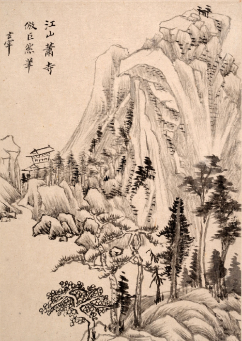

A long, long time ago...
Atop Mount Zhilong, the Eternal Star Sect lived in harmony within the natural beauty of the mountain. The martial practitioners of the sect lived modestly and trained with discipline. They meditated under the stars and contemplated their path for as long as they lived, only occasionally taking the journey down the mountain to offer their martial services and wisdom to the world below. Yet, they sought not to claim the highest peak for themselves, for they lived with the knowledge that a crane does not need to fly to be close to the stars.
